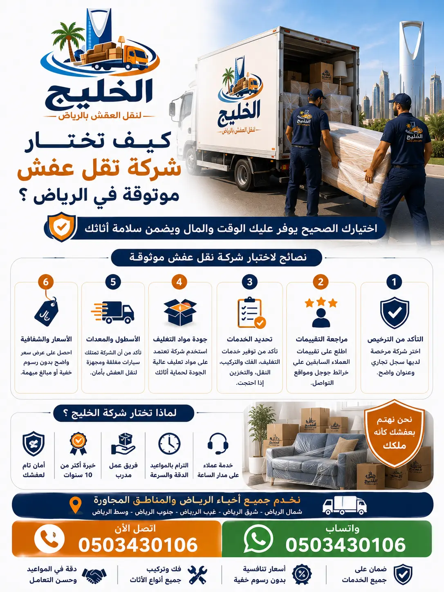

دليل خطوة بخطوة لاختيار شركة نقل عفش موثوقة في الرياض. تعرف على المعايير الأساسية، الأسئلة الذكية، وكيف تتجنب الشركات الوهمية.
اختيار شركة نقل عفش موثوقة في الرياض هو قرار حاسم يؤثر على سلامة أثاثك وراحتك النفسية. مع وجود العديد من الشركات في السوق، قد يكون من الصعب التمييز بين الشركات المحترفة والشركات الوهمية. هذا الدليل الشامل يساعدك على فهم المعايير الأساسية لاختيار أفضل شركة نقل عفش بالرياض، والأسئلة الذكية التي يجب طرحها، والعلامات التحذيرية التي يجب تجنبها. سواء كنت تنتقل إلى منزل جديد، أو تنقل أثاث مكتبك، أو تحتاج إلى تخزين مؤقت، فإن اختيار الشركة المناسبة يوفر عليك الوقت والجهد والمال.
في هذا الدليل، سنستعرض كيف تختار شركة نقل أثاث من خلال تقييم السمعة، الخبرة، الخدمات المقدمة، الشفافية في التسعير، والالتزام بالمواعيد. كما سنقدم لك قائمة بالأسئلة الذكية التي يجب طرحها قبل التوقيع مع أي شركة، بالإضافة إلى علامات التحذير التي تكشف الشركات غير الموثوقة. أفضل شركة نقل عفش الرياض هي التي تلتزم بالجودة والشفافية وتوفر خدمات متكاملة بأسعار تنافسية. تابع القراءة لتتعرف على كل ما تحتاجه لاتخاذ القرار الصحيح.

نقل العفش ليس مجرد "خدمة توصيل". إنها عملية دقيقة تتضمن فك، تغليف، حمل، تحميل، نقل، تفريغ، وتركيب. كل خطوة فيها ممكن أن يحدث فيها خطأ صغير يسبب خسارة كبيرة [citation:5]. تخيل مثلاً أن قطعة خشب تتخدش لأن الشركة لم تستخدم بطاطين حماية، أو شاشة تلفزيون تتكسر بسبب تحميل غير سليم، أو أن يوم النقل يتأخر بالكامل لأن الشركة لم تلتزم بالموعد. كل هذه السيناريوهات سببها قرار واحد: اختيار الشركة الخطأ [citation:5].
التدقيق في اختيار شركة نقل أثاث بالرياض ليس رفاهية، بل وسيلة لحماية عفشك، وقتك، وميزانيتك. المعيار الأساسي ليس السعر فقط، بل الخبرة، الاحتراف، والالتزام [citation:5]. الفرق بين شركات النقل المحترفة والعادية واضح في جودة التغليف، سلامة الأثاث، والالتزام بالجداول الزمنية. اختيار شركة غير موثوقة قد يكلفك أكثر من توفير بضعة ريالات في البداية. لذا، قبل أن توقع أي عقد، تأكد من أن الشركة تلتزم بأعلى معايير الجودة والسلامة.
قبل أن تتواصل مع أي شركة نقل عفش، اسأل نفسك: هل هذه الشركة ستحافظ على عفشي كما أنا حريص عليه؟ إذا كانت الإجابة غير واضحة، فهناك مجموعة من المعايير التي يجب مراجعتها [citation:5]:
شوف آراء العملاء على جوجل وفيسبوك. ابتعد عن الشركات ذات التقييم المنخفض أو الشكاوى المتكررة [citation:5].
الشركة ذات الخبرة الطويلة أقدر على التعامل مع المفاجآت وتقليل فرص الخطأ [citation:5].
تغليف احترافي، فك وتركيب، أوناش رفع، سيارات مجهزة [citation:5].
الشركة الجادة تقدم جدولاً واضحاً وتلتزم به [citation:5].
عمال مدربون على التعامل مع الأثاث بذوق واحترافية [citation:5].
سعر واضح من البداية بدون رسوم خفية [citation:5].
هذه المعايير تشكل أساساً متيناً لتقييم أي شركة نقل أثاث بالرياض. تأكد من أن الشركة التي تختارها تستوفي هذه المعايير قبل التوقيع على أي اتفاق.
السمعة هي أول وأهم معيار لاختيار أفضل شركة نقل عفش بالرياض. قبل أن تثق بأي شركة، ابحث عن تقييمات العملاء على منصات مثل جوجل ماب وفيسبوك. اقرأ التعليقات بعناية، وركز على التجارب الحديثة. الشركات الموثوقة لديها تقييمات إيجابية باستمرار، وتظهر استجاباتها للشكاوى إن وجدت [citation:5]. تجنب الشركات التي لا توجد لها أي تقييمات، أو التي تكون تقييماتها مريبة ومكررة [citation:5].
يمكنك أيضاً الاستفادة من تجارب الأصدقاء والعائلة. اسألهم عن شركات نقل العفش التي تعاملوا معها، واستفسر عن تجربتهم [citation:1]. تجربة شخص موثوق قد توفر عليك الكثير من الوقت والجهد. كما يمكنك البحث في المنتديات المحلية ومواقع التواصل الاجتماعي عن تجارب العملاء مع شركات النقل المختلفة [citation:1]. ابحث عن جمل مثل "تجربتي مع شركة نقل عفش" واقرأ ما يقوله الآخرون. احرص على ألا تعتمد على رأي واحد فقط، بل اجمع آراء متعددة لتكوين صورة شاملة عن سمعة الشركة [citation:1].
الخبرة في مجال نقل العفش هي مؤشر قوي على كفاءة الشركة. أفضل شركة نقل عفش الرياض هي التي تمتلك سنوات من الخبرة في التعامل مع جميع أنواع الأثاث والمنازل والمكاتب [citation:5]. الشركات ذات الخبرة الطويلة تكون أقدر على التعامل مع المفاجآت، وتقلل من فرص الأخطاء [citation:5]. اسأل الشركة عن عدد سنوات عملها في المجال، واطلب الاطلاع على مشاريع سابقة إذا أمكن.
الخبرة لا تقتصر على عدد السنوات فقط، بل تشمل أيضاً تنوع الخدمات المقدمة. شركة نقل الأثاث التي لديها خبرة في نقل الفلل، الشقق، المكاتب، والقصور تكون أكثر كفاءة من شركة متخصصة في نوع واحد فقط. شركة نقل أثاث بالرياض المحترفة توفر لك فريقاً مدرباً على التعامل مع جميع أنواع الأثاث، من غرف النوم إلى المطابخ والأجهزة الإلكترونية [citation:5]. تأكد من أن العمالة لديها خبرة كافية في فك وتركيب الأثاث، خاصة إذا كان لديك أثاث فاخر أو قطع ثمينة.
الشركة الموثوقة لا تكتفي بالنقل فقط، بل تقدم حزمة متكاملة من الخدمات. تشمل هذه الخدمات: تغليف احترافي باستخدام مواد عالية الجودة، فك وتركيب الأثاث بواسطة فنيين متخصصين، سيارات نقل مجهزة بأنظمة تثبيت حديثة، وأوناش رفع للأثاث الثقيل [citation:5]. وجود هذه الخدمات تحت سقف واحد يدل على تنظيم وخبرة الشركة [citation:5].
اسأل الشركة عن نوع مواد التغليف التي تستخدمها. هل تستخدم كراتين سميكة، فوم، بلاستيك فقاعي، وبطاطين مخصصة؟ [citation:5]. التغليف الجيد هو أساس حماية الأثاث من الخدوش والكسر أثناء النقل. كما استفسر عن فريق الفك والتركيب: هل لديهم نجارين وفنيين متخصصين؟ أم أنهم يعتمدون على عمالة غير مدربة؟ [citation:5]. الشركة المحترمة توفر لك فريقاً مدرباً على التعامل مع جميع أنواع الأثاث، بما في ذلك الأثاث الفاخر والأجهزة الإلكترونية الحساسة [citation:5].
الشفافية في التسعير هي علامة فارقة للشركات الموثوقة. اسأل عن تكلفة الخدمة بالتفصيل، وتأكد من عدم وجود رسوم خفية. الشركة المحترمة تقدم لك سعراً واضحاً من البداية وتلتزم به [citation:5]. احذر من الشركات التي تقدم أسعاراً منخفضة بشكل غير منطقي، فقد يكون ذلك مؤشراً على خدمات رديئة أو رسوم إضافية تظهر لاحقاً [citation:5].
أسعار نقل العفش في الرياض تختلف حسب حجم الأثاث، المسافة، والخدمات المطلوبة. اطلب عرض سعر مكتوب ومفصل يوضح كل البنود. قارن بين عروض عدة شركات، ولكن لا تجعل السعر هو العامل الوحيد في قرارك. الجودة والموثوقية قد تكلف أكثر قليلاً في البداية، لكنها توفر عليك خسائر أكبر لاحقاً [citation:1]. تذكر أن السعر البخس أحياناً يكلفك خسارات أكبر بكثير من اللجوء لمتخصص واعي بالأساليب السليمة للنقل [citation:1].
حتى لو كانت الشركة تدعي أنها "الأفضل"، لا تسلم لهم عفشك من أول مكالمة. الأسئلة الصحيحة ستكشف الحقيقة من أول محادثة [citation:5]. إليك قائمة بالأسئلة الذكية التي يجب أن تطرحها:
إذا كانت الشركة تغلف بكرتون خفيف بدون فوم أو بطاطين حماية، فالتغليف مجرد شكلي [citation:5].
شركة محترمة لازم يكون عندها فنيين متخصصين، مش عمال بيعتمدوا على التجربة والخطأ [citation:5].
إذا كنت تسكن في دور عالٍ، هذه نقطة مهمة جداً [citation:5].
رد الشركة هنا يكشف إذا كانت مسؤولة فعلاً ولا تشتغل "ع البركة" [citation:5].
طلب بسيط يكشف الكثير. الشركة الواثقة من شغلها لا تخاف من رأي الآخرين [citation:5].
الإجابات على هذه الأسئلة ستساعدك على اتخاذ قرار مبني على ثقة، وليس على كلام معسول في مكالمة تليفون [citation:5].
الفرق بين شركة محترفة وشركة مؤقتة ليس في الاسم أو السعر، بل في التفاصيل الصغيرة التي لا تظهر إلا وقت الجد [citation:5]. إليك العلامات التي تكشف الشركات الوهمية:
لو السعر أقل من المعتاد بشكل كبير، غالباً هذا يعني: عمالة غير مدربة، مواد تغليف رديئة، أو خدمة بدون أي ضمان أو التزام [citation:5].
شركة جد تكون موجودة فعلياً، لها مكتب، رقم ثابت، وصفحة نشطة. الشركة الموسمية ترد من رقم موبايل شخصي فقط [citation:5].
إذا كانت الشركة تقول "هنعمل كل حاجة" بدون تفاصيل واضحة، أو لا تريد الإجابة عن أسئلة مثل: هتغلفوا بإيه؟ العربية مغلقة ولا مفتوحة؟ في كام عامل؟ فهذا مؤشر خطر [citation:5].
شركة حقيقية عندها عملاء وتجارب واضحة. الشركات الموسمية إما ليس لديها تقييمات، أو التقييمات شكلها غير طبيعي ومكرر [citation:5].
إذا كانت الشركة غير واضحة، أو تحاول أن تجعل الاتفاق مجرد "كلام وخلاص"، فانسحب فوراً. العفش ليس تجربة، ولا شيء نغامر به [citation:5].
قارن بنفسك بين شركة الخليج وغيرها من شركات نقل العفش في الرياض:
| الخدمة | شركة الخليج | متوسط المنافسين |
|---|---|---|
| نقل شقة غرفتين | 500 – 700 ريال | 800 – 1000 ريال |
| نقل فيلا صغيرة | 1500 – 2200 ريال | 2000 – 3000 ريال |
| فك وتركيب غرف نوم | 200 – 350 ريال | 350 – 500 ريال |
| تغليف العفش (لكل غرفة) | 100 – 200 ريال | 150 – 300 ريال |
| فك وتركيب مكيف سبليت | 150 ريال | 200 – 250 ريال |
| تخزين العفش شهرياً | 200 – 400 ريال | 300 – 600 ريال |
هذه المقارنة توضح أن شركة الخليج تقدم أفضل قيمة مقابل المال، مع خدمات متكاملة وأسعار تنافسية. أرخص شركة نقل عفش بالرياض لا تعني بالضرورة الأفضل، ولكن مع الخليج تحصل على الجودة بسعر مناسب.
شركة الخليج لنقل العفش تجمع بين الخبرة الطويلة، الخدمات المتكاملة، والأسعار التنافسية. مع أكثر من 15 عاماً من الخبرة في مجال نقل العفش بالرياض، نقدم لعملائنا خدمة موثوقة وآمنة. فريقنا مدرب على أعلى مستوى، ويستخدم أحدث المعدات وأفضل مواد التغليف لضمان وصول أثاثك بحالة ممتازة [citation:2].
نحن نؤمن بالشفافية التامة، لذلك نقدم عروض أسعار واضحة ومفصلة بدون أي رسوم خفية. كما نوفر تخزين الأثاث في مستودعات آمنة ومكيفة للعملاء الذين يحتاجون إلى تخزين مؤقت [citation:2]. بالإضافة إلى ذلك، نقدم أفضل طرق تغليف الأثاث لحماية ممتلكاتك من الخدوش والكسر. أفضل شركة نقل عفش الرياض تنتظر اتصالك لتقديم خدمة متميزة. اتصل بنا اليوم على 0503430106.
شركة موثوقة تتمتع بسمعة جيدة، تقييمات إيجابية على جوجل، خبرة طويلة، وشفافية في التسعير [citation:5].
ليس بالضرورة. السعر المنخفض قد يعني خدمات رديئة أو رسوم خفية. الأفضل هو التوازن بين السعر والجودة [citation:5].
اسأل عن مواد التغليف، فريق الفك والتركيب، الأوناش، سياسة التعويض، والتقييمات السابقة [citation:5].
تجنب الشركات التي لا يوجد لها مقر واضح، تقدم أسعاراً منخفضة جداً، أو لا تقدم معلومات واضحة عن خدماتها [citation:5].
نعم، نقدم تغليف احترافي باستخدام أفضل المواد لحماية الأثاث [citation:2].
نعم، لدينا فريق من النجارين والفنيين المتخصصين في فك وتركيب الأثاث [citation:2].
تختلف المدة حسب حجم الأثاث. نقل شقة يستغرق 3-5 ساعات، ونقل فيلا 6-10 ساعات.
نعم، نقدم ضماناً شاملاً على سلامة الأثاث من الكسر والتلف أثناء النقل.
نعم، نوفر تخزين الأثاث في مستودعات آمنة ومكيفة [citation:2].
نعم، نقدم خدماتنا على مدار الساعة طوال أيام الأسبوع، بما في ذلك العطلات.
يتم تحديد السعر بناءً على حجم الأثاث، المسافة، والخدمات المطلوبة. نقدم عرض سعر شفاف ومفصل [citation:5].
نعم، لدينا أوناش رفع للأثاث الثقيل والضخم لتسهيل عملية النقل [citation:5].
نستخدم مواد تغليف عالية الجودة، وأحزمة تثبيت، وسيارات مجهزة بنظام تعليق ممتص للصدمات [citation:2].
نعم، نقدم نقل المكاتب والشركات باحترافية وسرعة.
بفضل خبرتنا الطويلة، خدماتنا المتكاملة، أسعارنا التنافسية، والتزامنا بالجودة والشفافية [citation:2].
لا تخاطر بأثاثك. اختر شركة الخليج لنقل العفش – الخيار الموثوق في الرياض.
اتصل بنا 0503430106